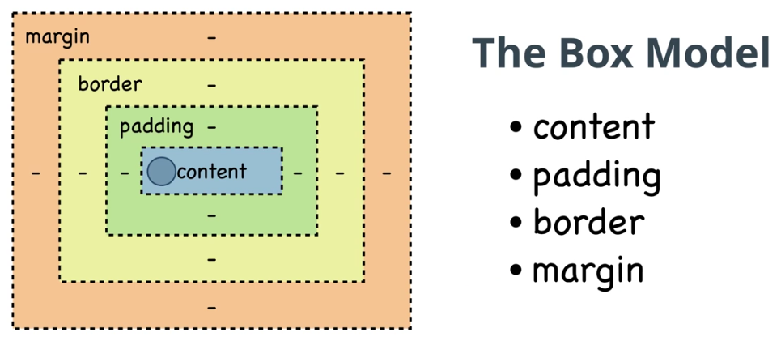

Modelo de caixa no CSS
Em CSS, o termo "modelo de caixa" é usado quando se fala de design e layout. O modelo de caixa CSS é essencialmente
uma caixa que envolve todos os elementos HTML. É constituída por: margens, bordas, preenchimento e conteúdo real.

Temos o conteudo(pode ser paragrafo, pode ser um link, texto.
Padding espaçamento interno do seu conteúdo. Ele é o espaçamento entre a borda e o conteúdo
O que define o tamanho do conteúdo é a largura e a altura.
O padding, o border e a margin vão definir o tamanho do conteúdo.
box-sizing que permite que mudemos o comportamento do box-model.Temos tres tipos de boxing-sizing:
- Border-Box:As propriedades de largura (width) e de altura (height) incluem o tamanho padding size e a
propriedade border, mas não incluem a propriedade margin.
- Content-box: Essa é o estilo padrão, conforme especificado pela norma CSS. As propriedades width (largura) e
height (altura) são medidas incluindo só o conteúdo, mas não o padding, border ou margin. Nota: Padding, border
e margin serão fora da box. Exemplo.: Se .box {width: 350px} então se você aplicar uma propriedade
{border: 10px solid black;} o resultado renderizado no navegador (browser) será .box {width: 370px;}
- padding-box:As propriedades de largura (width) e de altura (height) incluem o tamanho padding size, mas
não incluem a propriedade border ou margem.